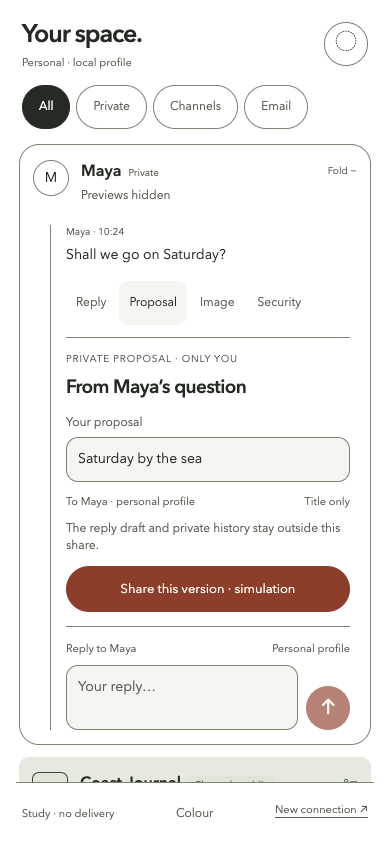
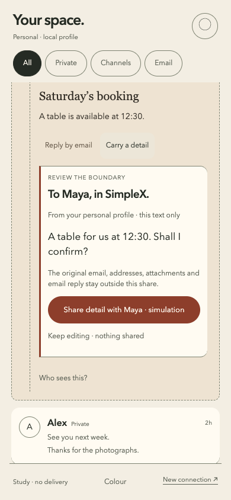

These five designs are the project owner’s current reference. Other prototypes and dated walkthroughs document supporting experiments and the design journey.
Different evolution.
A visible progression.
The octopus and humanity followed different evolutionary branches. Their different structures offer an analogy for how SimpleX’s different network foundations could lead to a different messaging experience. This is a design hypothesis, not a ranking of animals or protocols.
Read the anatomy research · Read the full mapping and its limits
01 / Where the thinking began
The nine original images retain their original appearance. Each records a question, response and critique; these are process evidence, not the current colour specification.

The appearance changed more than the interaction model.

Still a familiar messaging model.

No single anatomical model unified the experience.

The anatomical connection was still too hard to see.

Eight branches are a constraint, not a rule; scale remains unproven.

The sequence still relied on conventional separate screens.

Navigation, thumb reach and the behaviour behind the shape need testing.

Curves need useful jobs; invitation and participant cues need correction.

The screens still need continuity beyond their appearance.
02 / V2 grounds the foundations
Invitations, identity, verification and group roles became five concrete browser studies. All five now use white, subtle blue materials and neutral words. They remain the baseline: familiar screens alone did not earn the 2028 ambition.


03 / Behaviour earns the form
The coordinating list stays familiar. The active relationship unfolds; tools remain local; drafts survive changes; disclosure is deliberate. Private messages, public channels and email share organisation while preserving their audience and transport differences.



Follow the complete email handoff
04 / The shared visual language

05 / Your next iteration
Take the short contributor walkthrough ↗ · Open a design proposal ↗ · Choose an open challenge ↗
Challenge one transition. Show what changes for the person, preserve the source and compare orientation, draft loss and audience comprehension. The metaphor starts the question; evidence must decide the result.
Independent community study. Fictional fixtures; local simulations. Original design material CC BY 4.0. No participant outcomes or production security guarantees claimed.